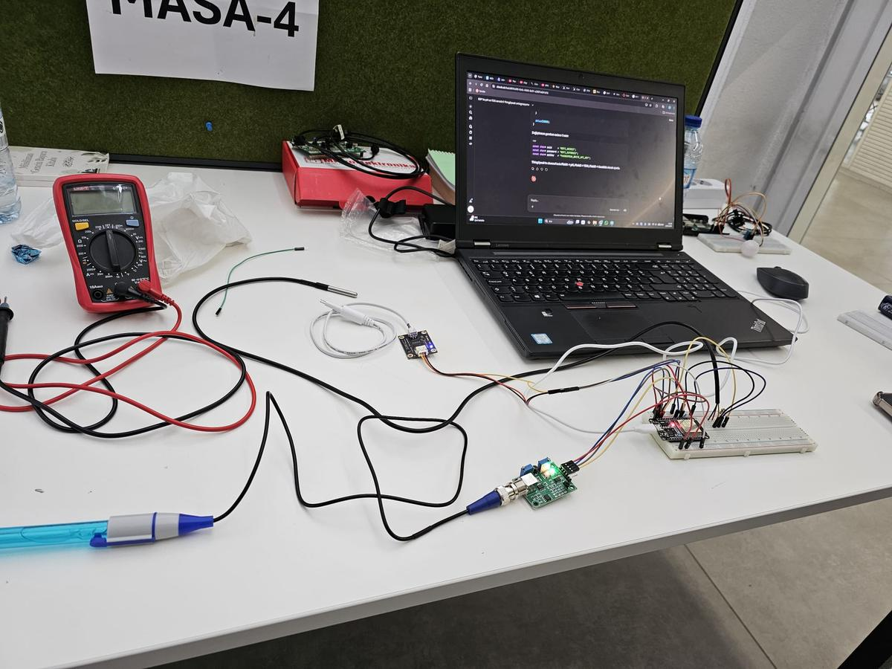
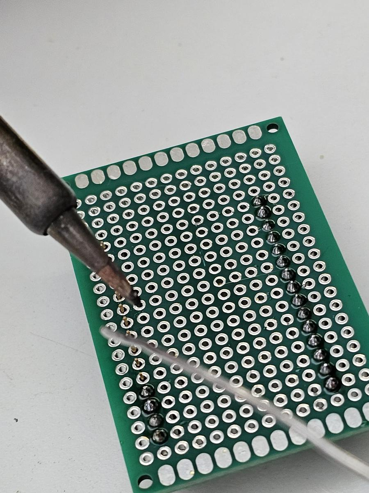
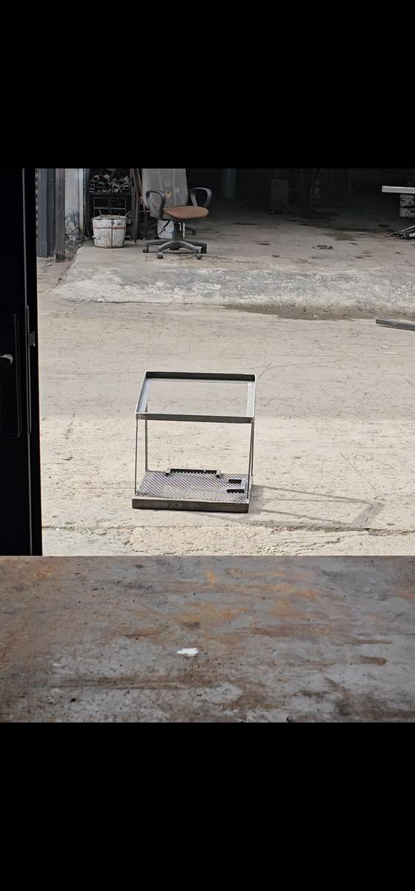
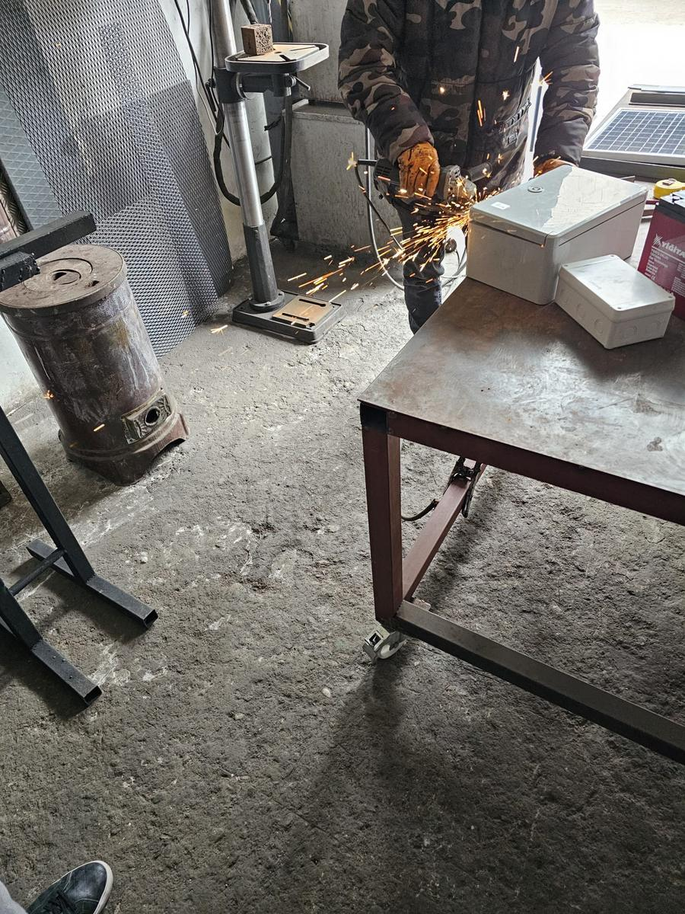
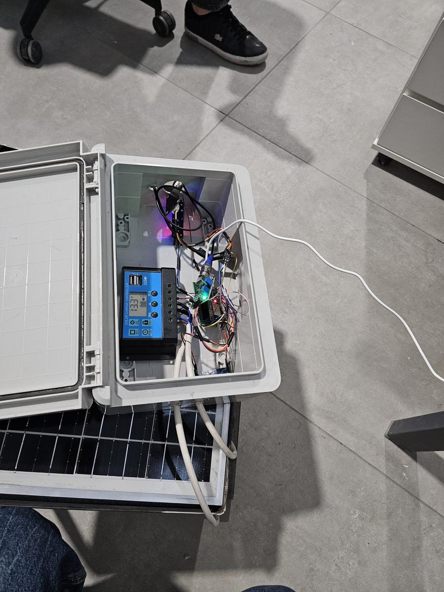
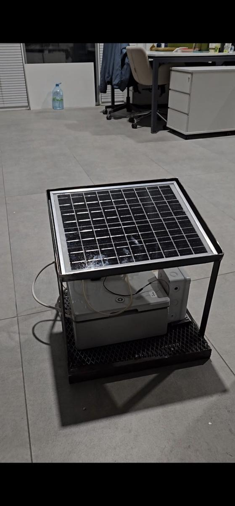

Su Analiz Sistemi: Sıfırdan Bir Sistem Kurmak
İçindekiler
Akıllı tarım projemizin ilk adımını tamamladık: Su Analiz Sistemi. Bu sistem aslında tek başına bile ciddi bir iş — sulama suyunun pH'ı, TDS değeri veya sıcaklığı tehlikeli seviyelere ulaştığında çiftçiyi anında uyarıyor, mobil uygulamadan bildirim gönderiyor. Güneş enerjisiyle çalışıyor, şebekeye bağlı değil, doğrudan tarlaya kurulabiliyor. Benim için bu proje sadece bir sistem değil, sıfırdan bir şey inşa etmenin ne demek olduğunu öğrendiğim bir süreçti.

Başlangıç: breadboard ve bitmek bilmeyen kalibrasyon
Her şey breadboard üzerinde başladı. pH sensörü, TDS sensörü, DS18B20 sıcaklık sensörü — hepsini teker teker devreye aldım, ESP32 ile konuşturmaya çalıştım. Kulağa basit geliyor ama inanın en çok yoran kısım kalibrasyon oldu. Sistem tamamen bitmişken bile kalibrasyon problemi peşimizi bırakmadı. pH sensörü özellikle sinir bozucu — referans solüsyonlarla sürekli ayar gerektiriyor, en ufak sapmada yanlış alarm üretebiliyor. Bu kısımda gerçekten çok vakit harcadık ve hâlâ tam anlamıyla bitmiş sayılmaz.

Hiç ders almadan ilk PCB
Breadboard'da her şey çalışır hale gelince sıra PCB'ye geldi. Daha önce hiç PCB tasarlamamıştım, doğrudan yazılıma oturdum ve öğrenerek yaptım. İlk ve en büyük hatamız: kartı çok küçük seçtik. Tüm bileşenleri o küçük alana sığdırmak gerçekten zor oldu. Üstüne bir de bu PCB'de hazır yollar yok — her bağlantıyı tek tek elle çizmem gerekiyordu. Saatler sürdü ama sonunda oldu. Lehim konusunda daha önce deneyimim vardı, o yüzden çok zorlanmadım. Açıkçası çıkan işten oldukça memnun kaldım.

Sanayi, toz ve kıvılcım
Elektronik taraf bitti, sıra fiziksel yapıya geldi. Güneş panelini tutacak, altında elektronik kutuyu barındıracak, sahaya dayanıklı bir iskelet lazımdı. Arkadaşımla birlikte sanayiye gidip geldik, günlerce uğraştık. Burada özellikle teşekkür etmem gereken biri var: Mehmet usta. Öğrenci olduğumuzu görüp "kim uğraşacak sizinle" demek yerine uygun fiyata bize yardım etti. Böyle insanlar olmasaydı bu iş çok daha zordu.

Enerji sistemi: neden bu kadar büyük akü?
Sistemi tamamen off-grid yapmak istediğimiz için enerji tasarımına özen gösterdik. 12V 24Ah akü ve 24W güneş paneli kullandık — bu biraz büyük gibi görünebilir ama kasıtlı seçtik. İleride su motoru yetersiz kalırsa daha güçlüyle değiştireceğiz, önceden geniş tuttuk. Şu anki pompa çalışma sırasında yaklaşık 0.7A çekiyor, sistem bu akü ile günlerce beslenebilir.
ESP32'nin 5V ihtiyacını solar charge controller'ın USB çıkışından karşılıyoruz. Su motoruysa 6V istiyor ama controller'da bu voltaj yok, sadece 13V çıkış var. Oraya bir buck converter ekleyip 13V'u 6V'a indirdik. Küçük ama kritik bir detay.
Teknik Detaylar
Mobil uygulama: veriyi çiftçinin eline taşımak
Donanım ne kadar iyi olursa olsun, çiftçi tarladan uzaktayken verilere ulaşamıyorsa pek bir anlamı kalmıyor. O yüzden sistemin ayrılmaz bir parçası olarak mobil uygulama geliştirdik. ESP32 ölçüm verilerini WiFi üzerinden buluta gönderiyor, uygulama da oradan anlık olarak çekiyor. Arayüzü mümkün olduğunca sade tuttuk — pH değeri, TDS, su sıcaklığı ve sistem durumu ana ekranda tek bakışta görünüyor. Değerler tehlikeli seviyelere ulaştığında doğrudan telefona bildirim gidiyor. Teknik bilgisi olmayan bir çiftçinin de rahatça kullanabileceği bir şey yapmak istedik — ve bunu başardığımızı düşünüyorum.

Kafayı yiyen sorun: sensör gürültüsü
Her şey hazır, test aşamasına geçtik. Ve tam o sırada garip bir şey fark ettik: sensörler birbirini etkiliyor. Üç sensör aynı anda çalışınca ölçüm değerleri kayıyor. Daha da kötüsü, su motoru devreye girince motorun yarattığı elektriksel gürültü sensörleri tamamen çıldırtıyor — anlamsız değerler, sahte alarmlar.
İki çözüm yolu vardı: yazılımsal filtreleme ya da donanımsal gürültü engelleme devresi. Önce yazılımsal tarafı çözdük — motor çalışırken ölçümü kısa süre askıya alıyoruz, okuma zamanlamalarını düzenledik. Şimdilik bu yeterli. Donanımsal çözüme sahadan gelen geri bildirimlere göre karar vereceğiz. Bu bizim ilk sistemimiz, nasıl davranacağını önce görmek istiyoruz.

Sonuç
Sistem sahaya kurulabilecek durumda. Güneş enerjisiyle besleniyor, verileri buluta gönderiyor, mobil uygulamadan takip edilebiliyor, anormal durumda bildirim atıyor. Eksikleri var, iyileştirilecek yerleri kesinlikle var. Ama bu ilk adım için bence yeterinden fazlası. En değerli şey ise şu: PCB tasarımı, lehim, kalibrasyon, gürültü problemi, enerji yönetimi... hepsini sıfırdan, yaşayarak öğrendim.
Teşekkürler
Bu projeyi tek başıma yapamadım. Her adımda yanımda olan arkadaşlarıma içtenlikle teşekkür etmek istiyorum — sanayideki yorucu günlerde, sabaha kadar süren test aşamalarında, her "neden çalışmıyor" krizinde hep birlikteydik. Ayrıca iskelet imalatında bize yardım eden Mehmet ustaya, fikir ve desteklerini esirgemeyen herkese çok teşekkürler. Güzel bir ekip çalışmasıydı.